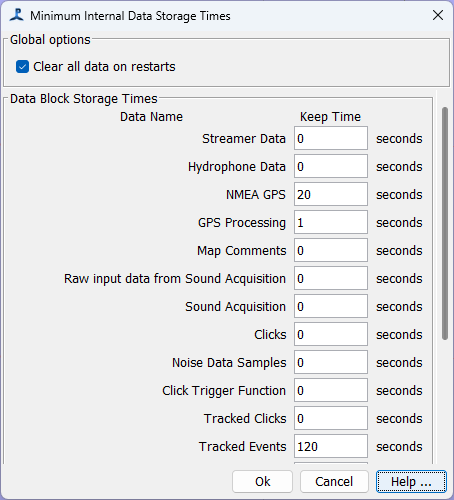

PAMGuard stores all types of data internally in memory while it's running. Conceptually, we call each data object a "Data Unit". A data unit might be a single click, a whistle, a short block of raw audio data, a slice of FFT data, a GPS position, a user comment, or anything else in PAMGuard.
Data units are stored in "Data Blocks". These are effectively a list of data units, with each new unit being added to the end of the list. To avoid PAMGuard running out of memory, data must be regularly deleted from the start of each list. For high volume data, such as raw data from the acquisition module, of FFT data, this has to happen quickly, generally only storing seconds or at most minutes of data. For other types of data, such as detected clicks or whistles, data can be stored for a lot longer before memory issues occur, and for very low rate data, such as user comments, these can be stored indefinitely.
Users, or "Observers" of data are notified each time data is added to a data block so that they can process that data, update a display, etc. Many users will require that data are kept in memory for some time. For example, if you want to show an hour of GPS track on the map, the map will tell the GPS data block to store data for a minimum of one hour. Similarly, if the spectrogram display is 12 seconds long and displaying whistles, it will tell the whistle data block to store data for at least 12s. If a data block is used by more than one observer, e.g. whistles being required for 12s on the spectrogram and an hour on the map, the data will be stored for the greater of these times, i.e. one hour in this case.
There are no fixed limits as to how long PAMGuard can request data be held in memory for, however you will run into difficulties if you set it up to store data for too long. For example, if you set the map to show hours of clicks and clicks are coming in at a high rate, you're going to run out of memory. In the Data Model Viewer you can see every data block and by clicking on it, can see which parts of PAMGuard are observing it, and how long they require data to be stored for.
Mostly, data storage times are managed fully automatically. However, just occasionally, PAMGuard gets it wrong and deletes data too early. Further, the default behaviour is to delete all data units from all data blocks every time PAMGuard starts or restarts.
From the File/Internal Data Storage ..." menu you can alter the default behaviour by telling PAMGuard not to delete data every time it restarts, and set minimum storage times for each data block.
